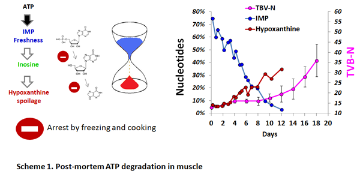

Nucleotides as freshness indicators: The content of ATP is particularly high in muscle where ATP is used for contraction. As soon as an animal dies, cell respiration stops as well as ATP formation. Post-mortem ATP degradation leads to rapid formation of IMP (5-24h), Inosine (days) and Hypoxanthine (weeks). The formation of IMP and inosine is mainly due to autolytic reactions, whereas hypoxanthine is a result of both autolytic and microbial degradation. The utilisation of nucleotides as freshness indicators were first suggested by pioneer works of Japanese scientists in the late 1950's (Saito et al.1958) and was further confirmed by numerous scentific articles. In difference to TVB-N or TMA widely used to detect biochemical changes that appear at a medium- or a late-stage of spoilage, nucleotides provide the tools to detect very beginning of spoilage process(Scheme 1). |
|
|
||
"Quickly frozen in sea" cod fillets (mean value of 13 samples) |
"Frozen"cod fillets (mean value of 20 samples) |
Chilled cod fillets(mean value of 3 samples) |
|
| Ki-value**, % | 35.6±7.9% |
61.8±18.7% |
95.1±2.25% |
| IMP content*, %* | 64.4±7.9% |
38.2±18.7% |
4.9 ±2.25% |
| Hx content, % | 5.4±2.8% |
9.4±3.9% |
18.2± 0.7% |
**Ki-value = 100x (Ino+Hx)/(IMP+Ino+Hx)= 100%- IMP content,%